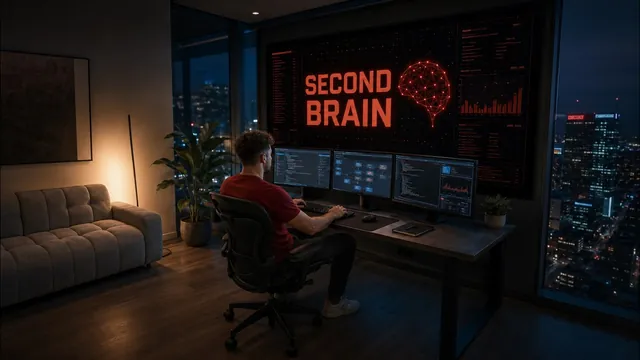

회사 3개를 돌리는 실사판 자비스 만들기

원본 영상 보기 →
- "채팅이 아니라 위임"이 사용법의 핵심이에요
- 메시지 단위 모델 라우팅이 정액제 플랜을 오래 쓰게 합니다
- 시스템을 유지보수하는 모델이 곧 시스템을 돌리는 모델이어야 오래가요
한 줄 요약
Nick Puru가 Mac에서 헤드리스로 돌아가는 Claude Code와 텍스트 파일 폴더만으로 이메일·캘린더·ClickUp·CRM에 접근하는 개인 비서 "Jarvis"를 만들었어요. Telegram 음성 노트로 지시하며, 메시지마다 모델을 골라 쓰는 라우팅 구조와 "채팅이 아니라 위임"이라는 사용법을 설명합니다.
전체 내용 정리
Jarvis의 실체는 폴더 하나예요
Jarvis는 이메일, 캘린더, 프로젝트 관리 도구 ClickUp, 리드가 들어 있는 CRM, 그리고 팀이 쓰는 거의 모든 것에 접근합니다. Nick은 이번 주에 이걸 Fable 5.1로 완전히 새로 만들었어요.
그런데 밑단은 의외로 단순합니다. Mac에서 헤드리스로 실행되는 Claude Code가 텍스트 파일 폴더 안에 앉아 있는 게 전부예요. 별도 애플리케이션도, 서비스도, 돈 내는 서버도 없습니다.
Claude Code이기 때문에 그가 이미 로그인해 둔 것들(ClickUp, 이메일, Slack, 구글 캘린더, Arc, 구글 드라이브, Granola, Fireflies)을 그대로 물려받아요.
제대로 된 연동이 없는 Facebook 광고 계정이나 GoHighLevel 같은 건 /computer로 실제 브라우저를 조작해 그가 보듯이 페이지를 읽습니다. 코드 작업은 Codex에 넘기고, Mac 자체를 조작해야 할 때는 먼저 물어본 뒤 실행해요.
음성 지시는 Telegram을 거치고, 녹음은 기기를 안 떠나요
인터페이스는 Telegram의 텍스트나 음성 노트입니다. 차 안에서 버튼을 누르고 "어제 광고 성과 어땠어?"라고 물으면 말로 답이 와요.
처리 흐름이 깔끔합니다.
- 음성 노트가 도착하면 Mac에서 로컬로 도는 Whisper가 전사합니다. 키도 없고 아무것도 업로드되지 않아요.
- 전사된 텍스트가 Claude Code로 갑니다.
- 답이 돌아오면 11 Labs가 음성으로 바꿔 음성 노트로 내보냅니다.
웹훅도, 서버도, 집을 향한 공개 주소도 없어요. Mac이 몇 초마다 Telegram에 새 메시지가 있는지 물어볼 뿐입니다. 기기를 떠나는 건 메시지와 말하게 할 문장 두 가지뿐이고, 녹음은 절대 나가지 않아요.
Jarvis는 Mac에 사는 시스템이라 Mac이 잠들면 Jarvis도 잠듭니다. 클라우드에 배포하지 않았고, 원하면 할 수 있지만 안 쓰는 낡은 Mac에 올려 둬서 남의 서버에 얹지 않는 것이 이 방식의 트레이드오프예요.
챗봇처럼 느껴지지 않는 이유는 두 가지를 기억하기 때문이에요
첫째는 사실(facts)입니다. 약 95개가 하나의 파일에 들어 있어요. 그가 내린 결정이나 준 수정, 알아내는 데 반나절이 걸린 것들이요. 한 번 말하면 다시 묻지 않는 기능입니다.
둘째는 지도(map)예요. 그의 콘텐츠 시스템은 약 1,900개 파일, 500만 단어로 모델에 통째로 넘기기엔 너무 많습니다. 그래서 각 파일이 무엇인지에 대한 인덱스만 들고 있다가 실제로 필요한 파일 하나를 읽어요.
그리고 수행한 모든 기능이 기록으로 남아 감사 로그가 됩니다. 지켜보지 않는 동안 무엇을 했는지 추측할 필요가 없어요.
메시지마다 모델을 골라 써요
화면 아래를 보면 Fable 5.1이 아니라 Opus 5를 쓰고 있습니다.
모든 곳에서 최상위 모델을 쓰는 건 동네 편의점에 헬리콥터를 타고 가는 격이라 쓸모없다는 거예요. "다음 회의가 뭐야" 같은 단순 조회는 프런티어 모델이 필요 없잖아요.
그래서 메시지마다 모델을 고릅니다.
- 단순 조회 → 보통 Sonnet
- 일반적인 작업 → Opus
- 정말 어려운 것 → Fable
어렵다는 기준이 명확해요. 한 번에 대여섯 개에서 열두 개의 결과를 머릿속에 들고 있다가 의견을 내야 하는 형태입니다. 앞서 보여 준 할 일 목록 답변이 정확히 그런 모양이고, 거기서 Fable이 값을 해요.
대부분의 메시지는 Fable을 건드리지 않습니다. 규칙이 뻔한 것들을 즉시, 무료로 분류하고, 판단이 안 서면 Haiku나 Sonnet, Opus를 써요.
Fable이 두 번째로 쓰인 곳은 이 시스템을 만든 과정이에요
Nick은 이 전체를 Fable 위에서 Claude Code로, 말로 지시하며 만들었습니다.
- 브라우저가 타임아웃 나면 그렇게 말했고 시스템이 호출 부분을 찾아 라이브러리를 교체했어요
- 도구 하나가 조용히 차단되자 로그를 감사해 그가 눈치채지 못한 네 개를 더 찾아냈고요
- 음성 모드가 돌아오지 않던 문제, 답장이 700자에서 잘리던 문제도 마찬가지였습니다
시스템을 유지보수하는 모델이 시스템을 돌리는 모델과 같고 모든 변경을 기록하기 때문에, 6개월 뒤에도 무엇을 했는지 말해 줄 수 있어 고칠 수 있어요.
비용은 월 200달러가 전부예요
Nick은 Claude의 Max 플랜을 쓰고 월 약 200달러입니다. API가 아니라서 어디에도 키가 없고, 미터가 돌지도 월말에 놀랄 청구서가 오지도 않아요.
도구가 달러 숫자를 표시하긴 합니다(34턴에 약 12달러). 하지만 그건 API로 했다면 들었을 비용의 추정치이지 청구서가 아니에요. 실제로 쓰는 건 플랜의 여유분입니다.
그래서 라우팅이 중요해요. "회의 몇 시야"를 하루 50번 최상위 모델로 물으면 점심 전에 한계에 부딪힙니다.
이미 플랜을 내고 있다면 이 시스템은 추가 비용이 없고, 아니라면 그 플랜 값이 유일한 실비용이에요.
한계: 빠르지 않고, 전문가가 아니라 집사예요
솔직한 한계도 밝힙니다.
빠르지 않아요. 제대로 된 답은 30초에서 1분 30초쯤 걸립니다. 이건 대화하는 게 아니라 위임하는 거예요.
전문가가 아니라 집사입니다. LinkedIn 글을 써 달라고 하면 형편없이 쓰는 대신 브리핑을 건네요. 모든 걸 어중간하게 하는 것보다 자기가 못 하는 걸 아는 편이 낫다고 보고 그렇게 설계했습니다.
Nick은 이걸 폰에서 떼어내 Raspberry Pi에 올리는 물리적 AI로 옮기고 싶어 해요. 이 폴더 전체는 그의 커뮤니티에 무료로 공개합니다.
ClickUp 검토 시연: 접근 한계를 스스로 밝혔어요
"ClickUp 작업에 들어가서 뭘 아는지 봐"라고 하자, Jarvis는 설명이 제대로 붙은 할 일은 몇 개뿐이고 나머지는 한 줄짜리라고 답했습니다.
인상적인 건 다음 대목이에요. ClickUp 필터 도구가 자신에게 차단돼 있어 키워드로 훑었고, 그래서 "전부가 아니라 목록의 대부분으로 받아들이라"고 스스로 밝혔습니다.
실질적인 것으로는 자문이 담긴 AIOS, 완성된 연결 메시지와 세 개 하위 작업이 딸린 클리닉 VSL 스크립트가 있는 LinkedIn 아웃리치(가장 먼저 시작할 것), 리드 마그넷 관련 퍼널 작업, 신규 가입 Slack 알림과 이탈 회원 재참여를 원하는 커뮤니티 자동화, 멘토십 광고 계획을 꼽았어요.
사용 전 확인할 점도 짚습니다. VSL 스크립트가 피닉스의 Dr. Martinez, 오스틴의 Dr. Chen 등 실명과 금액을 인용하고 있다고요.
이어 Raspberry Pi 영상 기술 검토를 요청하자, "작동하는 버전은 Pi가 오케스트레이터인 형태"라며 클라우드 브레인으로 프레이밍하고 로컬 모델의 한계를 영상 소재로 삼으라고 권했어요.
핵심 인사이트
- "채팅이 아니라 위임"이 사용법의 핵심이에요: 답이 30초~1분 30초 걸리는 건 대화 상대로 쓰지 말라는 신호입니다. 작업을 던져 놓고 다른 일을 하다가 결과를 확인하는 방식으로 써야 하고, 그래서 글쓰기처럼 품질이 중요한 일은 초안 대신 브리핑을 받도록 설계했어요.
- 메시지 단위 모델 라우팅이 정액제 플랜을 오래 쓰게 합니다: 단순 조회에 최상위 모델을 쓰면 점심 전에 한도에 걸려요. 규칙으로 뻔한 걸 무료로 걸러내고, 여러 결과를 동시에 저울질해 의견을 내야 하는 질문에만 상위 모델을 배정합니다.
- 시스템을 유지보수하는 모델이 곧 시스템을 돌리는 모델이어야 오래가요: 모든 변경이 기록되고 같은 도구로 고칠 수 있어서, 6개월 뒤 무언가 깨져도 무엇을 왜 바꿨는지 추적해 복구할 수 있습니다. 감사 로그가 "조용한 실패"를 막는 장치예요.
- 연동이 없으면 브라우저를 사람처럼 읽게 하세요: Facebook 광고나 GoHighLevel처럼 API가 없는 곳도 실제 브라우저를 열어 화면을 읽는 방식으로 커버합니다. 완벽한 연동을 기다리지 않고도 접근 범위를 넓힐 수 있어요.
오늘 당장 해볼 것
- AI에 반복해서 다시 알려 주는 사실(거래처 담당자, 톤 규칙, 자주 틀리는 것)을 한 파일에 모아 "한 번 말하면 다시 묻지 않는" 사실 목록으로 만들고, 작업 시작 시 이 파일을 먼저 읽게 하세요.
- 자주 하는 질문을 "단순 조회 / 일반 작업 / 여러 정보를 동시에 판단하는 어려운 질문" 세 가지로 분류해 보고, 어려운 질문에만 상위 모델을 쓰도록 규칙을 정하세요.
- 업체에 자동화 구축을 맡길 때 "모든 동작을 기록으로 남겨서 나중에 무엇을 왜 바꿨는지 추적할 수 있게 해 달라"고 요구하고, API 연동이 없는 도구는 브라우저 조작으로 대체 가능한지 물어보세요.